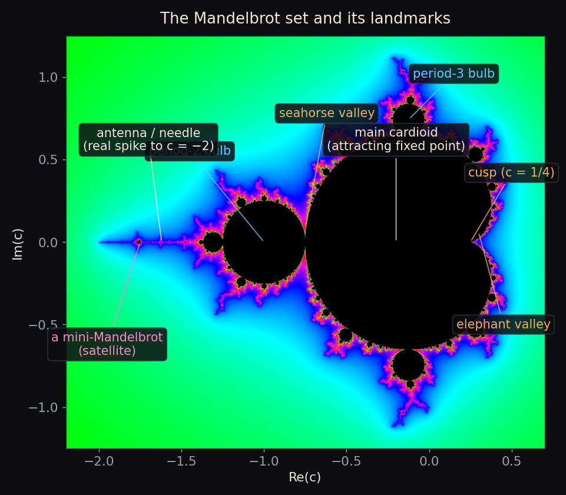
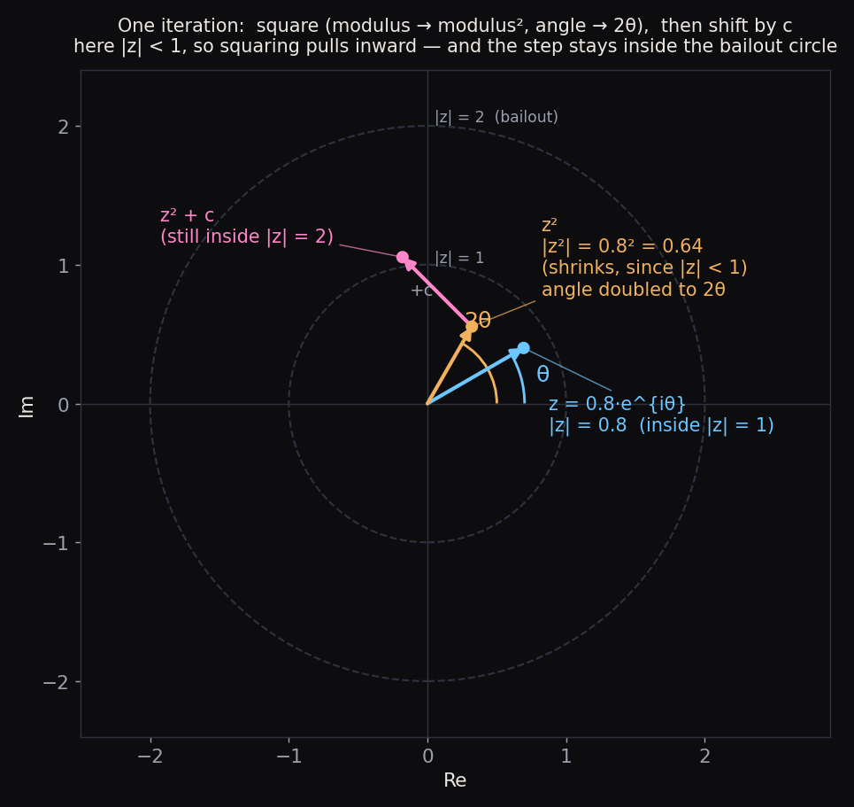
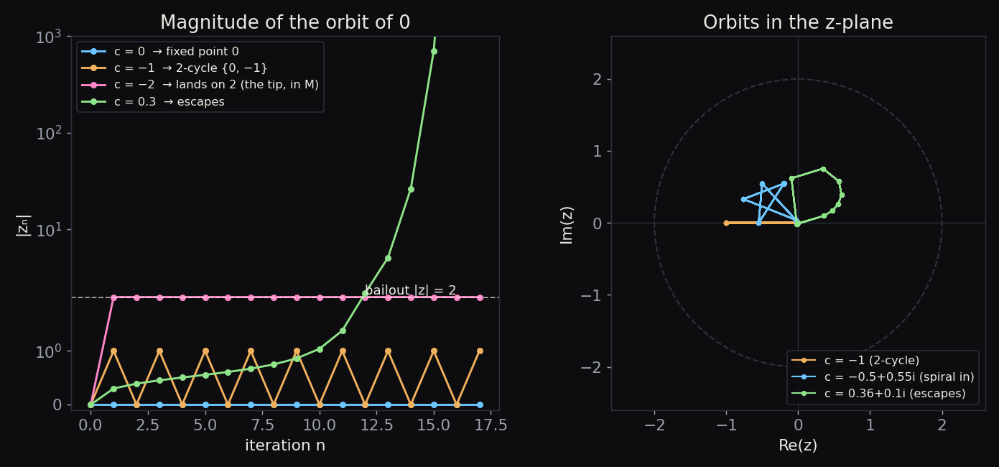
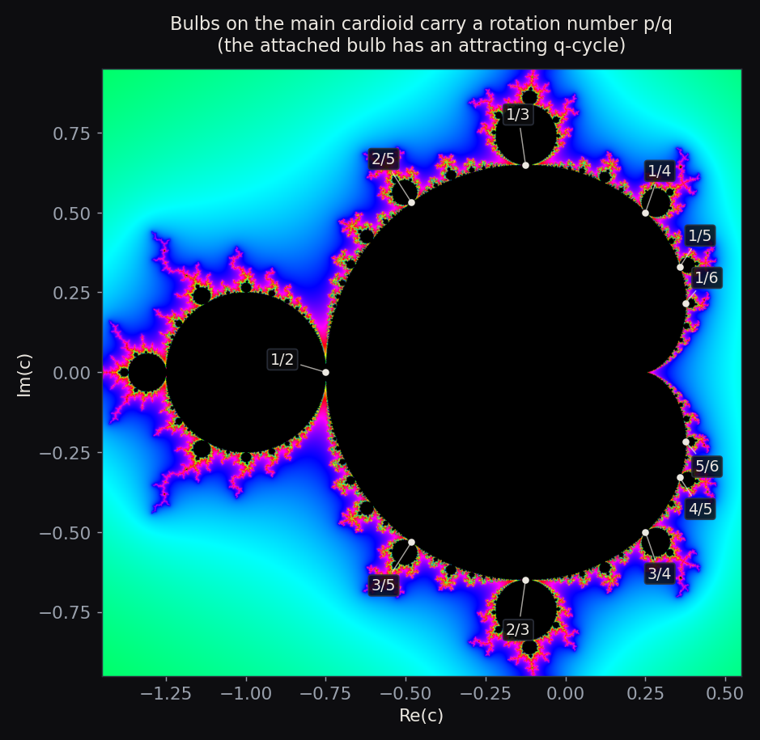
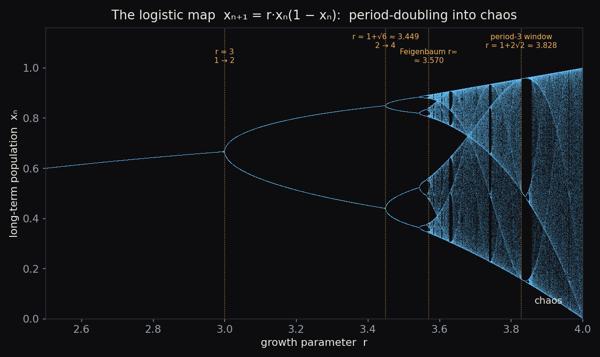
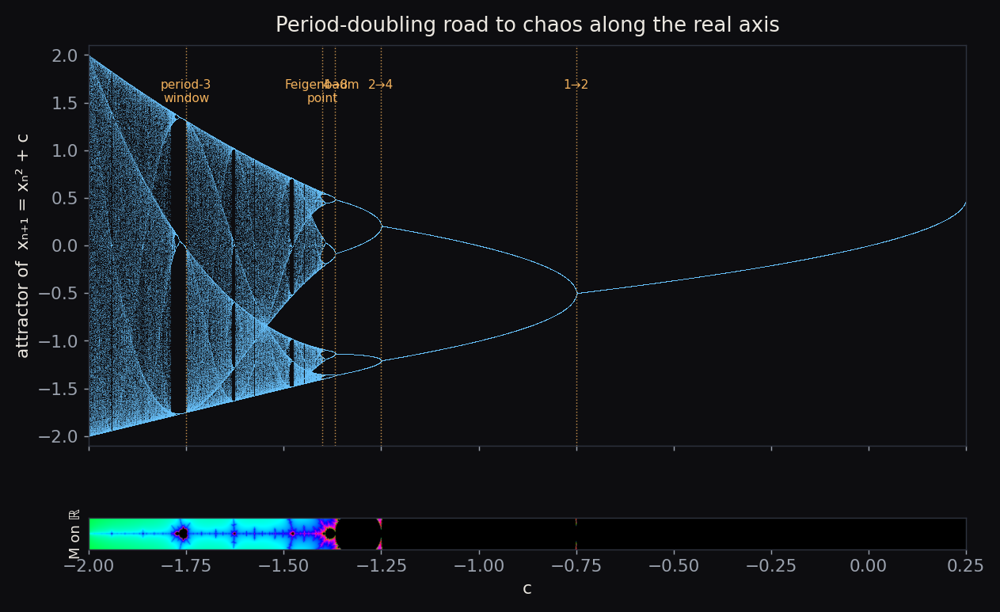
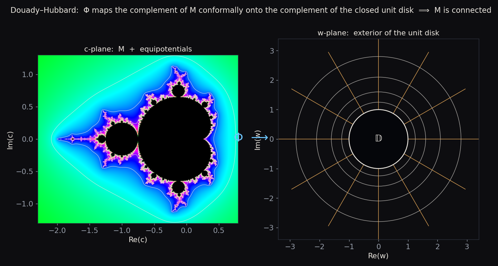
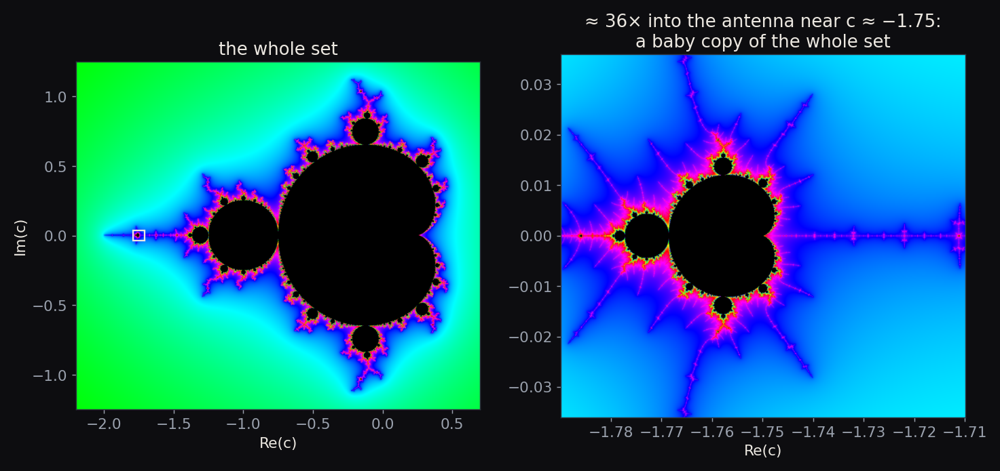
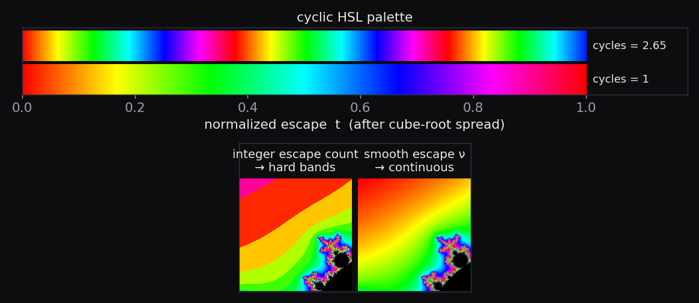

Collection I - Fractals · Notes
The Mandelbrot Set
The whole object in one sentence. Take the rule \(z \mapsto z^2 + c\), start from \(z = 0\), and ask a single yes/no question: does the orbit stay bounded? The set of complex numbers \(c\) for which the answer is yes is the Mandelbrot set — and that one question carries an entire universe of structure.
Contents
- A short history
- Reading the picture
- The dynamics: squaring, escape, and periodicity
- From iteration to the bifurcation diagram
- Why the set is connected — and the MLC conjecture
- Hyperbolic components and the density of hyperbolicity
- Fun facts: self-similarity and fractal dimension
- How the viewer colors the set
- How the viewer zooms so deep: perturbation theory
1. A short history
The set is defined by the simplest nonlinear map imaginable — a square plus a constant — yet nobody drew it until computers could. The first known picture is a 1978 rendering by Robert Brooks and Peter Matelski, who stumbled onto it while studying Kleinian groups; it is a coarse ASCII-style plot, but the cardioid and the main bulb are already there.
In 1980, Benoit B. Mandelbrot, working at IBM's Thomas J. Watson Research Center, produced the first detailed computer visualizations while exploring the parameter space of the quadratic family \(z^2 + c\). His images revealed the filaments, the satellites, and the endless boundary detail. Mandelbrot's 1982 book The Fractal Geometry of Nature turned “fractal” into a household word.
The rigorous mathematics came from Adrien Douady and John H. Hubbard. Their Étude dynamique des polynômes complexes (the “Orsay notes,” 1982–1985) laid the analytic foundation: they proved the set is connected, introduced the machinery of external rays and the uniformizing map, organized the bulbs by rotation number, and — crucially — named the set after Mandelbrot. It is Douady who is usually credited with the name “ensemble de Mandelbrot.” Almost everything in the sections below is, in one way or another, their framework.
2. Reading the picture
Formally,
\[\mathcal{M} = \Big\{\, c \in \mathbb{C} \;:\; \text{the orbit } 0,\; f_c(0),\; f_c^2(0),\dots \text{ stays bounded} \,\Big\}, \qquad f_c(z) = z^2 + c .\]
Everything you see is a map of parameters \(c\), not a shape in the variable \(z\). Each pixel is a different dynamical system, colored by how its orbit behaves.

The landmarks worth knowing:
- Main cardioid — the big heart-shaped body. These are the \(c\) for which \(f_c\) has an attracting fixed point. Its boundary is the curve \(c(\varphi) = \tfrac{1}{2}e^{i\varphi} - \tfrac{1}{4}e^{2i\varphi}\), with the cusp at \(c = \tfrac14\).
- Period-2 bulb — the disk of radius \(\tfrac14\) centered at \(c=-1\). Here the attracting orbit is a 2-cycle.
- Bulbs / decorations — every bump on the cardioid is a hyperbolic component with its own attracting cycle; they are indexed by a rotation number \(p/q\) (§3).
- Antenna / needle — the spike running left along the real axis, ending at the tip \(c = -2\).
- Seahorse valley (the cleft near \(c \approx -0.75\) where the cardioid meets the period-2 bulb) and elephant valley (the parade of trunks on the cardioid's right flank near \(c \approx 0.28\)) — informal names for two of the most photogenic neighborhoods.
- Mini-Mandelbrots (satellites) — tiny near-perfect copies of the whole set, scattered along the filaments (§7).
Two of these landmarks are more than scenery: the main cardioid and the period-2 bulb are the first two regions whose dynamics we can pin down with a formula. Their equations are derived in §3 — see Attracting fixed points and the main cardioid and The period-2 bulb, exactly.
3. The dynamics: squaring, escape, and periodicity
The map, one step at a time
Write a complex number in polar form, \(z = r\,e^{i\theta}\). Squaring it does two very clean things:
\[z^2 = r^2 \, e^{i\,2\theta} \qquad\Longrightarrow\qquad \underbrace{r \to r^2}_{\text{modulus is squared}},\quad \underbrace{\theta \to 2\theta}_{\text{angle is doubled}} .\]
Then the map adds \(c\), which simply translates the point. So each iteration of \(z \mapsto z^2 + c\) is “square, then shift.”

That picture explains a lot at a glance:
- Points with \(r < 1\) are pulled toward the origin by squaring; points with \(r > 1\) are flung outward, and fast (a number of modulus \(10\) becomes \(100\), then \(10^4\)…). The unit circle \(r=1\) is the knife-edge, where squaring becomes the pure angle-doubling map \(\theta \to 2\theta\) — already a textbook example of chaos.
The escape criterion and the bailout radius 2
Once an orbit gets large, the squaring term overwhelms the shift and the orbit runs away to infinity. Precisely: if \(|z| > 2\) and \(|z| \ge |c|\), then
\[|f_c(z)| = |z^2 + c| \;\ge\; |z|^2 - |c| \;\ge\; |z|^2 - |z| \;=\; |z|\,(|z| - 1) \;>\; |z|,\]
and since the growth factor \((|z|-1) > 1\) keeps compounding, \(|z^n| \to \infty\). Because every \(c \in \mathcal{M}\) satisfies \(|c| \le 2\), the rule is simply:
The orbit of \(0\) escapes if and only if it ever exceeds \(|z| = 2\).
This is the bailout radius the renderer watches for, and the escape time (how many steps until \(|z| > 2\)) is what gets turned into color in §8.

A few orbits make the boundary cases concrete:
- \(c = 0\): the orbit is \(0 \to 0 \to \cdots\) — a fixed point. Bounded.
- \(c = -1\): \(0 \to -1 \to 0 \to -1 \to \cdots\) — a 2-cycle. Bounded (this is the center of the period-2 bulb).
- \(c = -2\): \(0 \to -2 \to 2 \to 2 \to \cdots\) — it lands exactly on \(2\) and stays. Bounded, but only just: this is the tip of the antenna. Nudge it to \(c = -2.01\) and the orbit escapes.
- \(c = 0.3\): escapes immediately.
Attracting fixed points and the main cardioid
What makes the interior of \(\mathcal{M}\) interesting is attracting orbits. The simplest are fixed points — values left unmoved by the map, \(f_c(z)=z\):
\[z^2 - z + c = 0 \qquad\Longrightarrow\qquad z_\pm = \frac{1 \pm \sqrt{1-4c}}{2} .\]
So there are (generically) two fixed points. Whether one of them attracts nearby orbits is decided by the multiplier \(\lambda = f_c'(z) = 2z\):
\[\lambda_\pm = 1 \pm \sqrt{1-4c}, \qquad \lambda_+ + \lambda_- = 2 .\]
Because the two multipliers always sum to \(2\), their average is \(1\) — sitting right on the unit circle — so they cannot both lie strictly inside it. At most one fixed point can be attracting (call it the \(\alpha\) point; the other, \(\beta\), is repelling and anchors the filaments).
The attracting fixed point exists exactly while \(|\lambda| < 1\), and it loses stability on the boundary \(|\lambda| = 1\). Putting \(\lambda = e^{i\varphi}\) and using \(c = z - z^2 = \tfrac{\lambda}{2} - \tfrac{\lambda^2}{4}\) traces out precisely the main cardioid promised in §2:
\[c(\varphi) = \frac{e^{i\varphi}}{2} - \frac{e^{2i\varphi}}{4}, \qquad 0 \le \varphi < 2\pi .\]
Three points on it deserve names:
- \(c = 0\) — here \(\lambda = 0\), so \(z = 0\) is super-attracting (orbits collapse onto it at once). This is the center, or nucleus, of the cardioid.
- \(c = \tfrac14\) — here \(1 - 4c = 0\), the two fixed points collide into one with \(\lambda = 1\). This is the cusp: the rightmost point, where the fixed point is first born in a tangent (saddle-node) bifurcation.
- \(c = -\tfrac34\) — here \(\lambda = -1\). The fixed point survives but turns marginally unstable, and this is exactly where the next region attaches.
The period-2 bulb, exactly
Cross \(c = -\tfrac34\) and the attracting fixed point hands off to an attracting 2-cycle — a pair \(\{z_1, z_2\}\) with \(f_c(z_1) = z_2\) and \(f_c(z_2) = z_1\). Both satisfy \(f_c^2(z) = z\), which is a degree-4 equation:
\[f_c^2(z) - z = (z^2 + c)^2 + c - z = 0 .\]
But the two fixed points also solve \(f_c^2(z) = z\) (a fixed point is trivially a 2-cycle), so the fixed-point factor \(z^2 - z + c\) divides this quartic. Pulling it out leaves a tidy quadratic for the genuine 2-cycle:
\[f_c^2(z) - z = \underbrace{(z^2 - z + c)}_{\text{fixed points}}\; \underbrace{(z^2 + z + c + 1)}_{\text{the 2-cycle}}, \qquad z_{1,2} = \frac{-1 \pm \sqrt{-3 - 4c}}{2} .\]
The cycle's stability comes from the chain rule around the loop: \(\lambda_2 = (f_c^2)'(z_1) = f_c'(z_1)\,f_c'(z_2) = 4\,z_1 z_2\). Vieta's formula on \(z^2 + z + (c+1)\) gives \(z_1 z_2 = c + 1\), so
\[\lambda_2 = 4(c + 1), \qquad\text{attracting} \iff |\lambda_2| < 1 \iff |c + 1| < \tfrac14 .\]
That inequality is exactly the disk of radius \(\tfrac14\) centered at \(c = -1\) — the period-2 bulb. It is super-attracting at its center \(c = -1\) (\(\lambda_2 = 0\)) and rooted at \(c = -\tfrac34\) (\(\lambda_2 = 1\)), meeting the cardioid right where we left off.
Higher periods
The same idea climbs. Period-\(k\) points solve \(f_c^k(z) = z\), a polynomial of degree \(2^k\). Cycles whose period divides \(k\) also solve it and factor out, leaving the primitive period-\(k\) points. Period 3, for instance, gives degree \(2^3 = 8\); removing the two fixed points leaves degree \(6\) — the two distinct 3-cycles. A cycle's multiplier is again the product around the loop, \(\lambda_k = \prod_i f_c'(z_i) = 2^k\, z_1 z_2 \cdots z_k\), and the attracting region is \(|\lambda_k| < 1\), centered at the super-attracting parameter where the critical point \(0\) itself lands on the cycle (i.e. \(f_c^k(0) = 0\)).
Unlike periods 1 and 2, there is no closed form for \(k \ge 3\) — the degree \(2^k\) explodes — so those cycles, and the centers of their bulbs and mini-Mandelbrots, are found numerically. Each such attracting region is one of the bulbs studding the set.
Periodicity, the period-2 bulb, and the rational bulbs
These higher-period bulbs hang off the main cardioid in a strikingly orderly way. A bulb attaches at the cardioid point whose fixed-point multiplier is a root of unity, \(\lambda = e^{2\pi i\, p/q}\), and the bulb growing there carries an attracting period-\(q\) cycle. The fraction \(p/q\) is the bulb's rotation number — it even tells you how the \(q\) filaments of its antenna are permuted at each step.

Two beautiful consequences:
- The biggest bulb is \(1/2\) — the period-2 bulb at \(c=-1\). Next come \(1/3\) and \(2/3\) (period 3), then \(1/4, 2/5, \dots\) — smaller as \(q\) grows.
- Between the bulbs \(p_1/q_1\) and \(p_2/q_2\), the largest bulb in the gap sits at the Farey mediant \(\dfrac{p_1 + p_2}{q_1 + q_2}\). The rationals organize the entire boundary.
4. From iteration to the bifurcation diagram
A short detour: the logistic map
Before the link to chaos theory, meet its most famous toy model. The logistic map
\[x_{n+1} = r\, x_n(1 - x_n), \qquad x_n \in [0, 1],\]
was popularized by Robert May (1976) as a model of a population that grows at rate \(r\) but is held back by crowding. Iterate it — feed each year's population back in — and ask what value (or values) the population settles into as \(n \to \infty\). The answer, plotted against \(r\), is one of the iconic pictures of nonlinear science.

- For \(1 < r < 3\) there is a single attracting fixed point \(x^{*} = 1 - 1/r\) (with multiplier \(2 - r\)): the population settles to one value.
- At \(r = 3\) the multiplier reaches \(-1\) and the fixed point period-doubles — the population now alternates between two values. This is the first bifurcation.
- That 2-cycle is stable until \(r = 1 + \sqrt{6} \approx 3.449\), where it doubles again to a 4-cycle — the second bifurcation. Then $8, 16, 32, \dots$, the gaps shrinking by the universal Feigenbaum constant \(\delta \approx 4.6692\) and accumulating at \(r_\infty \approx 3.5699\).
- Past \(r_\infty\) the orbit never repeats — chaos — but the chaos is shot through with windows of sudden order, where a stable cycle reappears out of nowhere. The widest is the period-3 window opening at \(r = 1 + 2\sqrt{2} \approx 3.828\) (its existence is the famous “period three implies chaos,” Li & Yorke 1975). At \(r = 4\) the map is fully chaotic.
The Mandelbrot set on the real axis is the same diagram
Now restrict the Mandelbrot map \(z \mapsto z^2 + c\) to real \(c\) and real \(z\). A real quadratic is a real quadratic: \(x \mapsto x^2 + c\) and the logistic map are affinely conjugate — identical dynamics in different coordinates. The parameter dictionary is exact:
\[c = \frac{r}{2} - \frac{r^2}{4}, \qquad\text{equivalently}\qquad r = 1 + \sqrt{1 - 4c}.\]
It carries the logistic range \(r \in [1, 4]\) onto \(c \in [-2,\ \tfrac14]\) — precisely the real slice of the Mandelbrot set. So the spike of \(\mathcal{M}\) along the real axis is the logistic bifurcation diagram, re-drawn in the parameter \(c\).

Every landmark maps straight over:
| logistic \(r\) | Mandelbrot \(c\) | event |
|---|---|---|
| \(3\) | \(-\tfrac34\) | fixed point → 2-cycle (cardioid → period-2 bulb) |
| \(1+\sqrt6 \approx 3.449\) | \(-\tfrac54\) | 2-cycle → 4-cycle |
| \(r_\infty \approx 3.570\) | \(c_\infty \approx -1.401\) | Feigenbaum point (onset of chaos) |
| \(1+2\sqrt2 \approx 3.828\) | \(-1.75\) | period-3 window |
| \(4\) | \(-2\) | fully chaotic (the antenna tip) |
The rows of bulbs marching down the antenna are exactly the period-\(2^k\) cascade, drawn in the complex plane.
Do the windows correspond to the satellite bulbs?
Yes — they are the very same objects. A periodic window in the 1-D logistic diagram and a satellite mini-Mandelbrot in the 2-D plane don't merely “correspond”: the window is the real cross-section of the satellite.
Here is why. Inside a window, three things happen in sequence — a tangent (saddle-node) bifurcation abruptly creates an attracting period-\(k\) cycle; that cycle runs its own period-doubling cascade; then it dissolves back into chaos. Read in the complex plane, that is exactly the anatomy of a mini-Mandelbrot: the tangent bifurcation is the cusp of the satellite's little cardioid, the sub-cascade is the satellite's own string of bulbs, and the window's chaos is the satellite's own antenna. The period-3 window at \(r \approx 3.828\) is the big mini-Mandelbrot at \(c = -1.75\).
So each window is a miniature copy of the whole bifurcation diagram, because each satellite is a miniature copy of the whole Mandelbrot set — the phenomenon of renormalization (Douady–Hubbard), and the same self-similarity we return to in §7. The only real difference is dimension: the satellite is the full 2-D object adrift in the complex plane, while its window is just the 1-D slit where it happens to cross the real axis.
5. Why the set is connected — and the MLC conjecture
Looking at the picture, you might guess the satellites are separate islands. They are not: in 1982 Douady and Hubbard proved \(\mathcal{M}\) is connected — every piece is joined to the main body by filaments, some far too thin to see.
The uniformizing map
Their proof is a gem. For \(c\) outside \(\mathcal{M}\), the map \(f_c\) is, near infinity, conformally the same as the pure squaring map \(w \mapsto w^2\); the change of coordinates is the Böttcher map \(\varphi_c\). Evaluating it at the critical value defines
\[\Phi:\ \mathbb{C}\setminus\mathcal{M}\ \longrightarrow\ \mathbb{C}\setminus\overline{\mathbb{D}}, \qquad \Phi(c) = \varphi_c(c) = \lim_{n\to\infty}\big(f_c^{\,n}(0)\big)^{1/2^n},\]
and Douady–Hubbard show \(\Phi\) is a conformal isomorphism: it maps the outside of the Mandelbrot set one-to-one and angle-preservingly onto the outside of the closed unit disk.

Because the complement of \(\mathcal{M}\) is conformally just the exterior of a disk — which is connected and has no holes — \(\mathcal{M}\) itself must be connected (and “full,” i.e. it traps no bubbles of exterior). The same map hands us two tools the renderer quietly uses:
- the potential (Green's function) \(G(c) = \log|\Phi(c)|\), whose level sets are the equipotentials drawn above (and which the smooth escape-time coloring of §8 approximates);
- the external rays \(\arg \Phi(c) = 2\pi\theta\), which land on the boundary and give \(\partial\mathcal{M}\) its combinatorial address book.
MLC
The big open question is MLC — “the Mandelbrot set is Locally Connected.” If true, Carathéodory's theorem says the inverse map \(\Phi^{-1}\) extends continuously to the boundary circle, so every external ray lands at a well-defined point and \(\mathcal{M}\) becomes homeomorphic to an explicit combinatorial model (Douady's “pinched disk”). In short, MLC would give a complete topological blueprint of the set — and, as a bonus, it would imply the density of hyperbolicity (§6) in the quadratic family. Jean-Christophe Yoccoz proved MLC at every finitely-renormalizable parameter; the infinitely-renormalizable case remains open. It is one of the central problems of complex dynamics.
6. Hyperbolic components and the density of hyperbolicity
A hyperbolic component is a connected piece of the interior of \(\mathcal{M}\) on which \(f_c\) has an attracting cycle of some fixed period. The cardioid (period 1), the bulbs (period \(q\)), and the little cardioid of every mini-Mandelbrot are all hyperbolic components. Each one is, internally, as tidy as a disk: the multiplier map \(\lambda : U \to \mathbb{D}\) is a conformal isomorphism, with
- a center where \(\lambda = 0\) — the superattracting parameter, where the critical orbit is exactly periodic (the “nucleus” the deep-zoom films aim for);
- a root where \(\lambda = 1\) — the parabolic point where the component is bolted onto its parent.
The density of hyperbolicity conjecture
Here is the picture to hold in your head. \(\mathcal{M}\) is one connected object; its bulbs and satellites are all stitched together by filaments; the interior is (conjecturally) nothing but these hyperbolic components — regions of calm, attracting dynamics — while all the chaos lives on the razor-thin boundary \(\partial\mathcal{M}\).
That “nothing but” is the density of hyperbolicity conjecture (Fatou's conjecture): the parameters with an attracting cycle are dense in the whole parameter plane. A set is dense when every point is a limit of it — so this says that arbitrarily close to any \(c\), even one buried in the chaotic boundary, there is a nearby \(c'\) whose dynamics is simple and attracting. Equivalently: the interior of \(\mathcal{M}\) has no exotic (“queer,” non-hyperbolic) components.
If it holds, the “computable, well-behaved” maps are as common as can be, and the quadratic family is, in a precise sense, tame. It is proved for real parameters (Graczyk–Świątek and Lyubich, 1997) but open over \(\mathbb{C}\) — and it would follow from MLC.
7. Fun facts: self-similarity and fractal dimension
Mini-Mandelbrots everywhere. Zoom into the filaments and you keep finding tiny, slightly-distorted copies of the entire set.

The set is not exactly self-similar like a Koch snowflake; it is quasi-self-similar, and the copies are explained by Douady–Hubbard's theory of renormalization. Near a Misiurewicz point (a preperiodic parameter) the set is even asymptotically self-similar — and, by a theorem of Tan Lei, locally looks like the Julia set at that same \(c\).
A boundary of dimension 2. The crinkliness has a number attached: in 1991 Mitsuhiro Shishikura proved the Hausdorff dimension of \(\partial\mathcal{M}\) is exactly \(2\) — the maximum possible for a curve in the plane. The boundary is, in a rigorous sense, as rough as a one-dimensional thing can be.
A few more:
- \(\mathcal{M}\) is compact and sits inside the disk \(|c| \le 2\).
- Its area is finite, \(\approx 1.5065\) (numerically).
- It is connected (proved) and conjectured locally connected (MLC).
- Despite the dimension-2 boundary, that boundary is conjectured to have Lebesgue measure zero — all the “area” is in the bulbs.
8. How the viewer colors the set
Points inside \(\mathcal{M}\) are painted black. Points outside are colored by how fast they escaped — but with two refinements that make the bands melt into smooth gradients.
Smooth escape time. A raw integer escape count produces hard contour bands (left, below). The renderer instead uses the normalized (renormalized) escape count, which interpolates between iterations:
\[\nu \;=\; n + 1 - \log_2\!\big(\log |z_n|\big),\]
evaluated at the first \(n\) with \(|z_n|\) past the bailout. (This \(\nu\) is essentially the escape potential \(G(c)\) from §5, which is why the coloring traces the equipotentials.)

Cube-root spread + cyclic hue. Most exterior pixels escape quickly, so the small-\(\nu\) values are crowded; the renderer spreads them out with a cube root and then wraps a cyclic hue around them:
\[t = \left(\frac{\nu}{\text{maxIter}-1}\right)^{1/3}, \qquad \text{hue} = \operatorname{frac}\!\big(t \cdot \texttt{cycles}\big),\]
mapped through a six-segment HSL→RGB wheel. The cycles control sets how many
times the palette repeats from the boundary outward — the knob behind the candy
striping in the deep-zoom films. (This exact mapping lives in the viewer's
colorMap, the CLI's colorize, and the landing-page hero shader, so all three
agree pixel-for-pixel.)
9. How the viewer zooms so deep: perturbation theory
Naively, every pixel iterates its own \(c\). That breaks down twice as you zoom in:
the arithmetic gets slow at high precision, and — more subtly — around zoom
\(\sim 10^{14}\) the per-pixel coordinate, computed in ordinary double, can no
longer tell neighboring pixels apart, so the image collapses.
Perturbation theory fixes both at once. Iterate one high-precision reference orbit \(Z_n\) from the view center \(C\), and write every other pixel as a small deviation \(z_n = Z_n + \delta_n\). Subtracting the two recurrences, the per-pixel part evolves in fast ordinary precision:
\[\delta_{n+1} \;=\; 2\,Z_n\,\delta_n + \delta_n^2 + \delta c, \qquad \delta c = c - C .\]
Only \(C\) and its orbit \(Z_n\) need many digits; the offsets \(\delta\) stay tiny and double precision is plenty. This removes the \(10^{14}\) wall and is dramatically faster than per-pixel high precision.
The full derivation — including the escape test in perturbed coordinates, glitch
detection and reference rebasing, and the (deferred) series approximation —
is written up separately in ../perturbation.md.